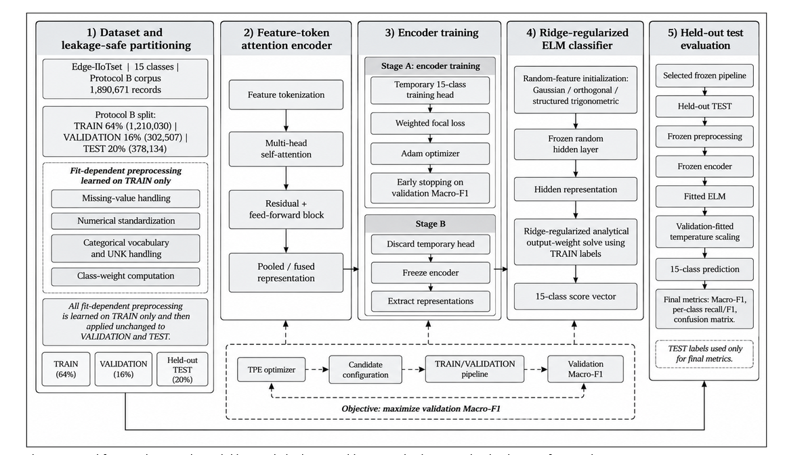
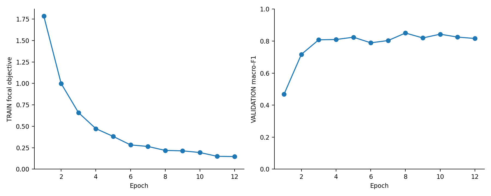

01 / DATA
Prepare and audit
Explicit feature schemas, missing-value handling, TRAIN-only statistics, categorical UNK handling, transitive duplicate/group linkage and file hashes.
Data preparation →A complete reference workflow for the proposed model: prepare tabular observations, learn feature interactions, fit an analytical classifier, calibrate, and evaluate on held-out data.
TRAIN determines preprocessing and model parameters. VALIDATION selects checkpoints and configurations and fits temperature. The frozen pipeline is evaluated through a separate TEST command.

Explicit feature schemas, missing-value handling, TRAIN-only statistics, categorical UNK handling, transitive duplicate/group linkage and file hashes.
Data preparation →Learned feature tokens, multi-head attention, residual feed-forward blocks, weighted focal loss, Adam and validation checkpoint selection.
Model architecture →Three random-map families, batched sufficient statistics, a float64 Cholesky solve, and numeric checkpoints without Python object deserialization.
ELM implementation →The manuscript's Table 5 search domain, TPE search, repeatable training seeds and a positive scalar temperature fitted on validation scores.
Search and calibration →Fixed-class metrics, ROC/PR curves, reliability diagrams, seed-paired inference, Holm correction, grouped bootstrap and 13 baseline families.
Statistical analysis →Dataset-native retraining, explicit feature/unit mappings for source-only transfer, leave-one-attack-out experiments, ablations and measured profiling.
Experiment commands →Python 3.10+ and a fresh output directory are required. The demo generates Gaussian toy observations, trains and tests the complete model, compares a logistic baseline, and saves predictions and figures.
git clone https://github.com/drmohammedadnan110-ai/iiot-feature-token-elm.git
cd iiot-feature-token-elm
python -m pip install -e ".[dev]"
python -m pytest -q
python -m iiot_ids.cli demo --out runs/demo --seeds 7For real data, review the provider snapshot, feature schema, label taxonomy and grouping policy before preparation. Read the full training, validation and testing instructions →
Dataset bytes are not redistributed. Access conditions and target definitions differ. The provider links below are the sources supplied with the paper.
| Dataset | Provider | Access |
|---|---|---|
| Edge-IIoTset | IEEE DataPort | Dataset DOI ↗ |
| ToN-IoT | University of New South Wales | Project page ↗ |
| X-IIoTID | Dataset authors | Author repository ↗ |
| CICIoT2023 | University of New Brunswick / CIC | Dataset page ↗ |
Provider pages may require registration or authentication. Archive availability and source rows were not verified for every dataset. Detailed dataset and mapping guide →
1,080 toy observations, 15 class names, five training seeds, and one fixed split. Mean test Macro-F1: 0.8393 for the proposed reference model and 0.8079 for logistic regression. These numbers do not measure detection of actual network attacks.
Predictions, statistics and checksums →The supplied paper reports 1,890,671 observations and five-seed mean Macro-F1 of 0.9456. Original embedded figures and 20 tables are preserved separately. Missing protocol details and numerical inconsistencies are documented in the audit.
Read the manuscript audit →
The original source-file hashes, retained feature list, ordered label mappings, row-level partition manifests, final hyperparameters, author training checkpoints and per-seed predictions. The repository exposes those inputs instead of inventing them. Full real-data training and 100-trial search have not been run here.
Raw CSV parsing and preprocessing arrays reside in memory. ELM fitting streams sufficient statistics, but the entire pipeline is not an out-of-core system. Optional boosting baselines, GPU execution and industrial hardware deployment have not been validated by the included synthetic run.
Md Ashiqul Islam · Kaniz Sultana Chy · Ariful Alam Mojumder · Mohammad Sazzad Hossain · Maria Kabtia · Samia Akter · Md Shahiduzzaman · Mohammed Adnan
This repository provides a new reference implementation. No published manuscript DOI was established. Software citation · Original embedded figures